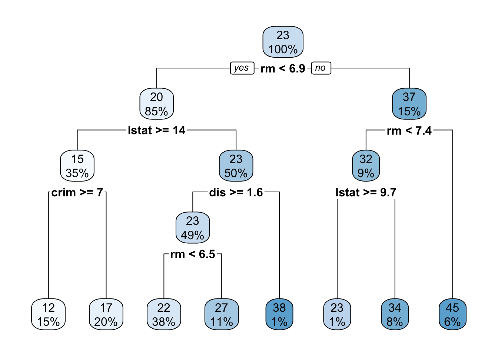
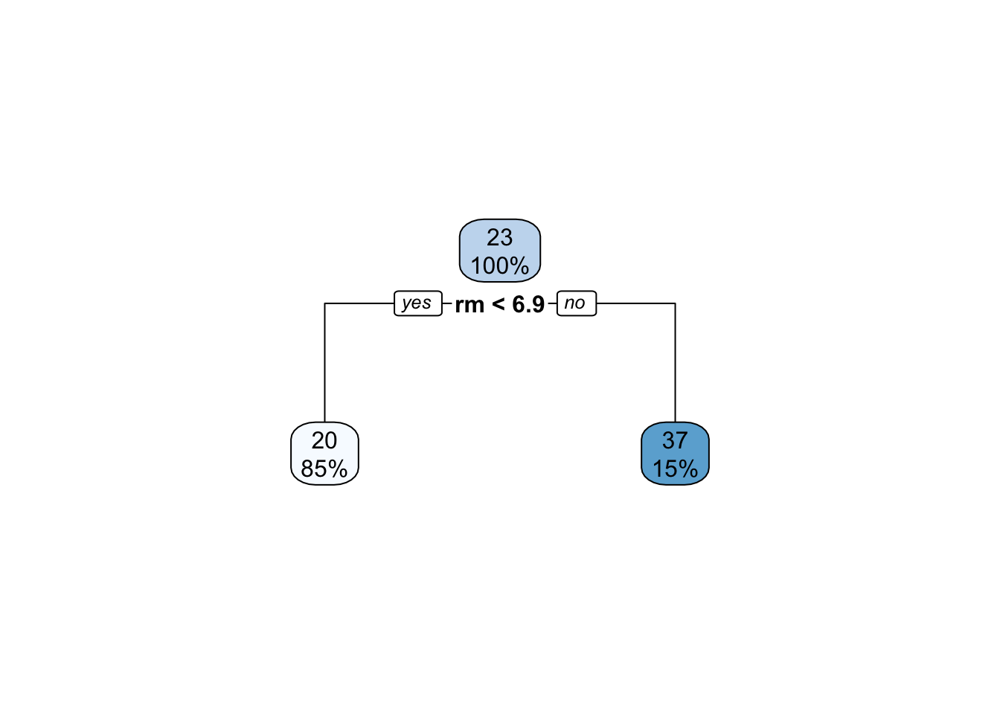
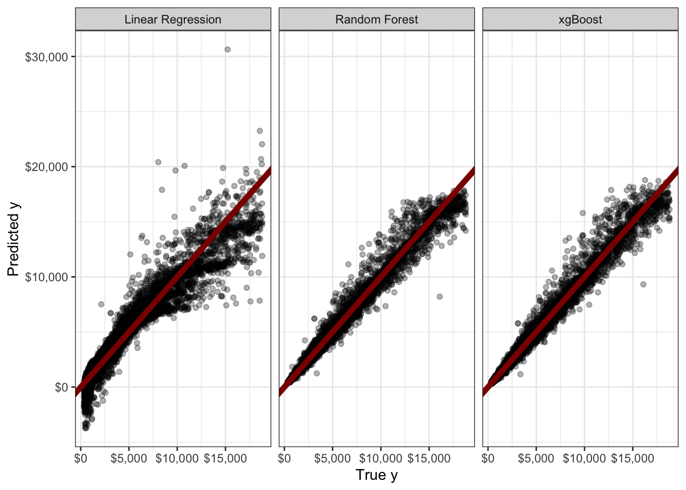

Attaching package: 'MASS'The following object is masked from 'package:dplyr':
selectdtree <- rpart(medv ~ . , data=Boston)
rpart.plot(dtree)
Michael Weylandt
March 31, 2026
\[\newcommand{\R}{\mathbb{R}} \newcommand{\E}{\mathbb{E}} \newcommand{\V}{\mathbb{V}} \newcommand{\P}{\mathbb{P}} \newcommand{\C}{\mathbb{C}} \newcommand{\bbeta}{\mathbb{\beta}} \newcommand{\bone}{\mathbb{1}} \newcommand{\bzero}{\mathbb{0}} \newcommand{\ba}{\mathbf{a}} \newcommand{\bb}{\mathbf{b}} \newcommand{\bc}{\mathbf{c}} \newcommand{\br}{\mathbf{r}} \newcommand{\bw}{\mathbf{w}} \newcommand{\bx}{\mathbf{x}} \newcommand{\by}{\mathbf{y}} \newcommand{\bz}{\mathbf{z}} \newcommand{\bX}{\mathbf{X}} \newcommand{\bA}{\mathbf{A}} \newcommand{\bB}{\mathbf{B}} \newcommand{\bC}{\mathbb{C}} \newcommand{\bD}{\mathbb{D}} \newcommand{\bU}{\mathbb{U}} \newcommand{\bV}{\mathbb{V}} \newcommand{\bI}{\mathbb{I}} \newcommand{\bH}{\mathbb{H}} \newcommand{\bW}{\mathbb{W}} \newcommand{\bK}{\mathbb{K}} \newcommand{\argmin}{\text{arg\,min}} \newcommand{\argmax}{\text{arg\,max}} \newcommand{\MSE}{\text{MSE}} \newcommand{\Fcal}{\mathcal{F}} \newcommand{\Dcal}{\mathcal{D}} \newcommand{\Ycal}{\mathcal{Y}} \]
To this point, we have created individual models for regression and classification tasks. We have covered regression-type models for low-dimensional settings (GLMs: mainly linear and logistic), generative models for classification (NB, LDA, QDA), purely discriminative models (SVM), and flexible non-parametric models (KNN). Building on these tools, we have developed non-linear extensions (splines and kernels) suitable for the \(n \gg p\) setting and regularization techniques (ridge and lasso) necessary for the \(p \gg n\) setting.
In each of these, we have argued that certain models (more precisely, certain estimators) have different amounts of bias and variance and given a rule of thumb that in low-data settings high-bias/low-variance models are preferred while in high-data settings, we should feel free to use low-bias models since the variance will be controlled by the large training set.
Furthermore, we have discussed the importance of ‘hold-outs’ (test/train splits, cross-validation, etc.) as a tool to avoid overfitting. If we evaluate our models on new data (or at least new to that model), we minimize the chance of ‘regurgitation’ and ensure that our models are learning true(-ish) generalizabile relationships. Importantly, we know that any time we make a selection, it is important to have a new data set for downstream tasks. So:
Personally, I find the jargon of these different sets a bit confusing–what is testing and how is it different than validation?–but the ‘new data for each task’ heuristic is easy to apply and generalize.
Finally, we have noted that - while hold out techniques are an excellent tool for maximizing predictive performance - they aren’t the best to ensure reliability of interpretation. If insights are more important than pure performance, stability techniques are typically a better strategy for tuning hyperparameters.
For the next two weeks, we are going to go beyond this ‘single model’ paradigm and consider how we might handle scenarios where we have two or more models available for our use. This is the domain of ensemble learning - building models consisting of multiple ‘sub-models’, termed ‘base learners’. Ensemble learning is particularly powerful when applied in conjunction with fast and flexible base learners, so we will also use this as a jumping off point for one more class of models.
We begin with a discussion of ensemble learning, the task of combining multiple (simpler) models into a ‘super model’ to achieve a task. Ensembles can be used for essentially any ML task, but we will focus on ensemble learning for the two tasks we have focused on to date: regression and classification. (The differences in these two tasks will not really have any bearing on our ‘ensembling’ discussion.)
Suppose that we want to predict the outcome of some variable \(Y\) using two statistically independent predictors \(\hat{Y}_1, \hat{Y}_2\): if arguendo we assume these are unbiased, the MSE of each prediction is simply
\[\begin{align*} \MSE_{\hat{Y}_i} &= \E_{Y, \hat{Y}_i}[(Y - \hat{Y}_i)^2] \\ &= \E_{Y, \hat{Y}_i}[(Y - \E[Y] + \E[Y] - \hat{Y}_i)^2] \\ &= \E_{Y, \hat{Y}_i}[(Y - \E[Y])^2 +2(Y - \E[Y])(\E[Y] - \hat{Y}_i)+(\E[Y] - \hat{Y}_i)^2] \\ &= \E_{Y}[(Y - \E[Y])^2 +2\E_{Y, \hat{Y}_i}[(Y - \E[Y])(\E[Y] - \hat{Y}_i)]+\E_{\hat{Y}_i}[(\E[Y] - \hat{Y}_i)^2] \\ &= \sigma_Y^2 + 2\E_{Y}[Y - \E[Y]]\E_{\hat{Y}_i}[\E[Y] - \hat{Y}_i)] + \sigma^2_{\hat{Y}_i} \\ &= \sigma_Y^2 + \sigma^2_{\hat{Y}_i} \end{align*}\]
(Why do the cross terms vanish?) That is, the MSE is simply sum of the ‘irreducible error’ associated with the best possible prediction (\(\sigma_Y^2\) against the optimal prediction \(\E[Y]\)) and the variance (error) in \(\hat{Y}_i\) as an estimator of \(\E[Y]\).
If \(\hat{Y}_1, \hat{Y}_2\) are both predictors of \(Y\), it is natural to ask if we can do better using a combination of the two of them than we can with either separately. Indeed, if we let \(\widehat{Y} = \frac{1}{2}(\hat{Y}_1 + \hat{Y}_2)\), the above analysis tells us:
\[\begin{align*} \MSE_{\widehat{Y}} &= \sigma_Y^2 + \sigma_{\widehat{Y}}^2 \\ &= \sigma_Y^2 + \V\left[\frac{\hat{Y}_1 + \hat{Y}_2}{2}\right] \\ &= \sigma_Y^2 + \sigma_{\hat{Y}_1}^2/4 + \sigma_{\hat{Y}_2}^2/4 \end{align*}\]
How does this compare to the separate predictions? Well, if \(\sigma_{\hat{Y}_1} = \sigma_{\hat{Y}_2}\), then we have clearly reduced our expected MSE by half of the variance error. (By definition, we can’t do anything about the irreducible error.) If, on the other hand, one predictor is much better than the other, say \(\sigma_{\hat{Y}_1}^2 = 400 \sigma_{\hat{Y}_2}^2\), then we have
\[\begin{align*} \MSE_{\hat{Y}_1} &= \sigma_Y^2 + 400 \sigma_{\hat{Y}_2}^2 \\ \MSE_{\hat{Y}_2} &= \sigma_Y^2 + \sigma_{\hat{Y}_2}^2 \\ \MSE_{\widehat{Y}} &= \sigma_Y^2 + 100.25 \sigma_{\hat{Y}_2}^2 \\ \end{align*}\]
So we don’t beat the superior predictor (\(Y_2\)), but we comfortably beat the inferior predictor (\(Y_1\)). Notably, if we didn’t know which predictor was better and had to select randomly (50/50), we would have an expected MSE of \(\sigma_Y^2 + 200\sigma_{\hat{Y}_2}^2\), so the ‘averaging’ predictor is still better. More generally, if \(\hat{Y_1}\) is sometimes better and \(\hat{Y_2}\) is better at other times, a suitable averaging strategy will do better in the long run than using a single predictor. (We should pick the averaging weights as a function of the variance of the two approaches and the relatively frequencies of the \(\hat{Y}_1\)-better and \(\hat{Y}_2\)-better scenarios.)
This example - simple as it is - gets at the core insight of stacking: if we have several ‘good enough’ models, we can do better - sometimes much better - by using a combination of them. This is not guaranteed - if \(\hat{Y}_2\) is always the ‘lower variance’ model, adding in some \(\hat{Y}_1\) pretty much always hurts - but we do not expect to have a single ‘dominant’ model. (See earlier discussion of the No Free Lunch Theorem.) In practice, we typically find ourselves armed with models of similar-enough performance (logistic regression, linear SVMs, RBF Kernel SVMs, RBF Kernel logistic regression) and find that different models perform better on different inputs. E.g., the ‘linear’ models might do well far from the decision boundary, while the ‘kernelized’ models might improve performance near the decision boundary while suffering from extra ‘wiggliness’ (variance) far from the decision boundary.
So what can we take away from this discussion?
Low correlation among predictors is helpful. If our base learners give the exact same predictions at every point, there’s nothing to be gained by combining and comparing them.
Put another way, ensemble learning benefits from a diverse set of base learners. We hope to ‘combine strength’ from different approaches to build an ensemble predictor that is better than any of its individual components.
The three major ensembling techniques we will cover - stacking, bagging, and boosting - essentially come down to different ways of getting this diversity.
So this is all well and good, but where do we actually get different predictors? Here, we’re going to change notation to \(\hat{f}_1, \hat{f}_2, \dots \hat{f}_K\) to emphasize that we want to learn a combination of predictors (functions estimated from data), not predictions.
Well… perhaps the easiest thing to do is to train different models on the same data. Logistic Regression, LDA, and SVMs will likely find similar decision boundaries, but they won’t be exactly the same. Suppose we have
sklearn
Further, let’s assume that we have the binarized predictions (\(\{0, 1\}\), no soft labels for now) from each model. How can we combine these?
Perhaps the simplest rule is the ‘majority vote’ rule: if \(\hat{f}_{\text{LR}}(\bx) = \hat{f}_{\text{LDA}}(\bx) = 1\) and \(\hat{f}_{\text{SVM}}(\bx) = 0\), then \(\hat{f}_{\text{Majority}}(\bx) = 1\).
This approach is quite easy to implement, but it treats all the inputs as equally reliable. While this isn’t the worst assumption, we can do better. In particular, what if we learned an optimal set of weights. Specifically, we want to learn a vector of weights \(\bw \in \R^3\) to maximize predictive accuracy of the linear combination \(w_1 \hat{f}_{\text{LR}} + w_2 \hat{f}_{\text{LDA}} + w_3 \hat{f}_{\text{SVM}}\). This gives us another classification problem, so let’s use logistic regression to determine the combination weights:
\[\hat{\bw} = \argmin_{\bw} \sum_{i=1}^n -y_i \bw^{\top}\hat{\bf} + \log(1 + e^{\bw^{\top}\hat{\bf}})\] where \(\hat{\bf}\) is a vector of the three base learner predictions.
The solution to this problem, \(\hat{\bw}\), gives the stacking weights for our three base learners. Once we have \(\hat{\bw}\), we can make predictions at our our new test point, \(\tilde{\bx}\), by:
We note a few practical points here:
Stacking creates a ‘model of models’ - the turducken of machine learning - and all of the ML tricks we have learned to date can be used in creating this meta-model. Like any modeling step, we have to practice good data hygiene (splitting and hold outs) to make sure we don’t overfit and to generate a good estimate of predictive accuracy, but otherwise it is particularly straightforward.
An interesting fact about stacking is that it treats each of the base learners \(\hat{f}_i\) as black boxes and doesn’t really need to know what is inside them or where they came from. This lets us use stacking as a ‘work-around’ for certain types of practical problems:
Stacking can also be used as a form of ‘post-processing’ to introduce additional desiderata that the original model training process was not aware of. I have explored this in the fairness context with some collaborators. Here, we consider a situation in which the base learners are learned to only maximize accuracy, but we include fairness constraints in the stacking process, effectively eliminating models that are highly predictive, but whose predictive power comes from systemtic biases.
Despite these strengths, stacking can only take us so far: the value-added of stacking comes from differences between the base learners and, when trained on the same data set, we don’t expect too much diversity among the base learners. In practical settings, stacking is particularly useful when we are given ‘standard’ or ‘baseline’ models for a task that we want to combine without changing the individual models, but for real improvements we may want to modify our pipeline to explicitly generate more diversity.
This brings us to our next family of ensembling techniques - resampling methods, the most famous of which is bootstrap aggregation or bagging.
In our discussion above, we argued that diversity of (variance between) base learners was key to ensemble performance. When these base learners are trained on the same training data, we can only get so much variance. Since most of our models are not terrible, they generally pick out the same major patterns in the data.
So how can we get more variance? We could further split our training data, using a small chunk for each model, but this seems likely to bring about variance problems. If we want to fit large ensembles of 10, 20, or even 100 models, we might wind up using less than 1% of the overall data to train a single model, which is clearly subpar. Stacking might give us some power at the margin, but it’s hard to make up for the weakness associated with using such a small portion of our data.
We can get around this problem using sampling or resampling techniques. We can train our esnemble members on randomly selected subsets of our data (or subsets of the features). Because these models have different training sets, they will be more varied. Typically, this sort of ‘data randomization’ induces more variance than just changing hyperparamters or model families.)
These randomization schemes have different names:
If the model is not too sensitive to the sample size (or if we use a high sampling rate), these strategies can work well. But we have a bit of a bind here: if we want to use large training sets for each learner, we go back to the overlapping training scenario we were trying to avoid.
Can we be a bit more creative on our sampling? We want to minimize overlap but also get ‘full sized’ training sets.
To get around this problem, we rely on a key idea of late 20th century statistics: the bootstrap.2 Recall the core idea of bootstrapping:
So how can we sample from the empirical distribution \(\hat{P}_n\)? We sample with replacement. That is, we pick one of the training points \(n\) times independently (with no regard for prior selections). Intuitively, this captures the idea of IID sampling - it’s also necessary so we don’t just reproduce the (shuffled) training data.4
This scheme - sampling with replacement - is the essence of bootstrap sampling. In STA 9719, you will see how it can be used to do things like estimate sampling variability of complex statistics. Here, our goal is a bit more straightforward: we just want a way to ‘shake things up.’
We can use a similar strategy to generate ‘new’ training data for our base learners:
This ensembling strategy is called bootstrap aggregation or more simply bagging.
So how much diversity / variance can we actually expect from this strategy? It depends on how much overlap we get in our sampling. This is a fun little probability exercise:
In our scenario above, what is the chance that \(\bx_1\) is in \(\tilde{\Dcal}_b\)?
For each sample, there is a \(1/n\) chance that we select \(\bx_1\), and hence a \(1-1/n\) chance that we don’t. If we repeat this process \(n\) times, there is a \((1-1/n)^n\) chance that we never select \(\bx_1\). For a large data set, this converges to
\[\lim_{n\to\infty}\left(1-\frac{1}{n}\right)^n = e^{-1} \approx \frac{2}{3}\]
so about \(2/3\) of our data is used for each base learner. Unlike straight subsampling, however, this process includes repeats, so we have \(n\) samples, guaranteeing us repeats.
A more detailed analysis can show that the number of times a sample appears is asymptotically Poisson: rare events (\(1/n\)) and large samples (\(n \to \infty\)) strike again.
So how does bagging actually work? We know that we’re always trying to control bias and variance so let’s look at those two terms separately:
\[\begin{align*} \V[\hat{f}] &= \V\left[\frac{1}{B}\sum_b \hat{f}_b\right] \\ &= B^{-2}\V\left[\sum_b \hat{f}_b\right] \\ &= B^{-2}\left(\sum_{b=1}^B \V[\hat{f}_b] + \sum_{\substack{b, b'=1 \\ b \neq b'}}^B \C[\hat{f}_b, \hat{f}_{b'}]\right)\\ &= B^{-2}\left(\sum_{b=1}^B \sigma^2 + \sum_{\substack{b, b'=1 \\ b \neq b'}}^B \rho\sigma^2\right) \\ &= B^{-2}\left(B\sigma^2 + (B^2 - B) \rho\sigma^2\right) \\ &= B^{-2}\left(B(\rho\sigma^2 + (1-\rho)\sigma^2) + (B^2 - B) \rho\sigma^2\right) \\ &= B^{-2}\left(B\rho\sigma^2 + B(1-\rho)\sigma^2) + B^2\rho\sigma^2 - B\rho\sigma^2\right) \\ &= B^{-2}\left(B(1-\rho)\sigma^2) + B^2\rho\sigma^2\right) \\ &= \rho\sigma^2 + \frac{1}{B}(1-\rho)\sigma^2 \end{align*}\]
This is an interesting formula. As always, we can understand it best by taking the extremes:
So we see we want a flexible (low-bias) base learner that is also going to give us low correlation (and low variance) among the bagged predictors. How can we get such a base learner? We’ll cover this more below.
To review: e discussed the ensemble learning technique known as bagging. Bagging, a contraction of ‘boostrap aggregation’ can be used to create an ensemble by training \(B\) copies of a given base learner on \(B\) distinct bootstrap samples, i.e., ‘faux’ data sets of \(n\) points obtained by sampling the original training data \(n\) times with replacement. Because these \(B\) trained base learners are essentially interchangeable, it is conventional to create the bagged prediction by a straight average (or majority vote if classification) of the individual base learners, though you will occasionally see the bagging base learners combined in a ‘stacked’ fashion.
We showed that the MSE associated with a bagged ensemble of size \(B\) is:
\[\MSE_{\text{Bagging}} = \text{Bias}^2_{\text{Base Learner}} +\underbrace{\rho\sigma^2 + \frac{1}{B}(1-\rho)\sigma^2}_{\text{Variance}} + \text{Irreducible Error}\]
and noted that, by sending \(B \to 0\), we reduce the ‘bootstrapping variance’ to 0 but that some ‘inherent variance’ remains from the training data.6 As we noted last week, this implies that our search for the optimal base learner should do three things:
If we can find something that does all of these, we will have a (near) optimal predictor (\(\MSE \approx \text{Irreducible Error}\)). This is our primary goal for the day.
Before we move to our long-promised final base learner, let’s consider another advantage of bagging. We know that it is important to have ‘new’ data when assessing model performance. To date, we have obtained this ‘new’ data through variants of the hold-out principle, such as the test-train split or cross-validation: if it is important to have new data, it is important enough to set aside some of our putative training data for model assessment.
But bagging gives us another source of ‘unseen’ data: if we sample \(n\) points from a population of size \(n\) with replacement, approximately \(n/e \approx 2n/3\) points will be sampled, leaving \(n(1-e^{-1}) \approx n/3\) points unseen by each base learner. If these points were the same across each base learner, we would have a readily available test set. But then our whole bagging strategy would be essentially useless…
We can estimate the so-called ‘out-of-bag’ error (OOB) associated with each training point by computing the predictive performance on the ensemble of learners that haven’t seen that point. That is, instead of testing the performance of the whole ensemble, we take a ‘subensemble’ of the base learners that never saw that point. Repeating this process over all \(n\) training points (and creating \(n\) different sub-ensembles) we obtain an estimate of the OOB error. Clearly, OOB is not test error of the entire ensemble, but it is a useful quantity nevertheless.
Formally, we obtain the bagged ensemble and associated OOB error as follows:
For each training point, we expect it to occur in approximately \(B/e\) bootstrap samples and hence we have approximately \(1 - B/e \approx B/3\) bootstrapped base learners that we can use to computing the OOB error. This isn’t quite as good as the full \(B\) samples we would use for a true test point, but since variance decreases quadratically in \(B\), this isn’t really a major loss.7
Ok - now it’s time to consider the final base learner of this course: decision trees. You are almost certainly already familiar with decision trees through diagrams like this:
Attaching package: 'MASS'The following object is masked from 'package:dplyr':
selectdtree <- rpart(medv ~ . , data=Boston)
rpart.plot(dtree)
Here, the tree is evaluated by applying a series of univariate8 binary decision rules ‘downwards’: that is, at each step, we ask one step about one variable and take the left or right branch as appropriate. The final terminus (or ‘leaf’) of the tree is then our prediction.
Decision trees are incredibly popular because they are easy to apply ‘mentally’ and suggest natural interpretations. Variables which are used to split early or split often are more important. Interestingly, decision trees also can be used to give an ‘intermediate prediction’ which is what we would get by stopping the prediction at that point. Splits which materially change the intermediate prediction are also more important.
But how should we actually fit a decision tree to data? This is, like bagging and computing OOB error, the sort of thing which is easy to understand intuitively, but comes with a significant amount of bookkeeping in practice.
Essentially, trees are fit by repeatedly asking the question: “What split would most reduce the error if my predictions stop here?” So, for the first split, the tree looks at each variable to determine its optimal split point, and then finds the optimal variable to split on. To find the optimal split point, we need to sort the data on that variable and then compute the ‘before’ and ‘after’ variance for each value. After finding the first split, the two ‘second level’ splits repeat this process on only the data in their path. That is, the two ‘second level’ splits are found on different data. The four ‘third level’ splits are found on four different data sets, etc.
Because the later splits are computed on different data sets, they almost always select different variables at each level (as in our example above, where the two ‘level two’ splits use the lstat and rm variables). Predictions are made by taking the average (or majority) of data left in that split.
Note that the splits need not be and typically are not ‘even’ splits along a variable. E.g., if we were doing a split on a variable that looks like
| Variable | Value |
|---|---|
| 1.0 | 1.0 |
| 1.1 | 0.9 |
| 1.2 | 1.1 |
| 1.3 | 1.4 |
| 100 | 500 |
| 105 | 550 |
The optimal split is clearly something like \(\texttt{Variable} < 1.3\) with conditional predictions of \(1.1\) and \(525\) in each split and split sizes of \(4\) and \(2\).
Clearly, if the tree is allowed to run ‘to completion’, there will be one data point left in each leaf and the tree can obtain 0 training error. That is, maximal decision trees are a very high complexity (low bias, high variance) model. On the other extreme, a ‘single split’ tree (often called a ‘stump’) will be low complexity (high bias, low variance). So we can take tree depth (number of levels) as a good proxy for model complexity. Like \(K\)-Nearest Neighbors, we can pick depth (complexity) by a suitable cross-validation or train-test scheme, but will soon see a better way.
Some other notes on trees:
CART (Classification and Regression Trees) or rpart (Recursive Partitioning) but most folks will know the term “decision trees” so I just use that.NA as very high or very low or use an explicit is.na decision ruleThere are tons of tiny little decisions in building trees, so I don’t recommend writing your own implementation. See, e.g., ?rpart.control for the fitting parameters used by the rpart package: other software will have similar options.
We are now ready to introduce the concept of random forests, which are almost bagged decision trees. Recall our big goal for bagging: constructing an ensemble of minimally correlated very flexible base learners. Clearly, ‘deep’ trees, i.e., trees with many splits, can be very flexible. (In the limit, sufficiently deep trees can fit the training data perfectly à la \(1\)-nearest neighbor methods.) And row-subsampling (bagging) gives us a good source of variance. So “bagged decision trees” are pretty darn good. But can we go further?
Indeed! We have one other knob we can turn: random use of features. When building a single tree, we always built our next split by looking for the best feature to split on out of all of our features. But we don’t actuallly need to use the best feature at each step. Instead, we can randomly select a subset of features at each split, pick the best of those, and go on our merry way.
Clearly, this is going to give us more variability, but are we concerned it might hurt us? If we (randomly) leave out the most important features, are we just producing a worse tree overall? This is where the true genius of random forests comes in: the feature is not removed from the whole tree, it is only removed from that one split. We can use it (if randomly selected) in later (deeper) splits. That is, if the feature is important early and we happen to miss it, the tree will wind up partially reconstructing it later.
So that’s the key construction of random forests:
This basically hits everything we want for ensemble learning: high variance flexible learners in the form of deep decision trees that are constructed in a way that gives us lots of tree-to-tree variance (resulting from both our row and column sampling) without loss of power in any individual tree (because the missing column in split \(i\) can reappear in all later splits).
Additionally, because trees are relatively quick to code and quick to apply (computers are very good at less than/greater than checks and binary logic), random forests are fast. Additionally, we note that for any bagging scheme- including random forests-the base learners are built and applied in parallel, so we can get even more speed by just throwing more compute power at the problem.
Here, you might ask whether we can combine stacking and random forests. Instead of using a simple sample average of trees, can we get an optimally weighted average of our trees? These sorts of optimized forests definitely have been explored, but they don’t tend to add too much above random forests.
As a general rule, random forests are pretty near optimal for applied ML on tabular data. They are:
For this reason, random forests are an indispensible part of the ML toolbox. You can throw them at almost any (tabular) problem and they will perform within some reasonable percentage of optimality. Being clear here: random forests are not optimal for every problem – no method is – but they do very well on almost all problem with minimal analyst effort. It often takes real work to beat a good random forest implementation.
When I face a challenge, e.g. in work with scientific collaborators, I often start by throwing a simple linear model (possibly with \(k\) lasso selected features) and a random forest and seeing how the performance compares. If the linear model is 80-90% as good as the random forest, I usually just stop there and report back “this is as good a linear model as you are likely to get without massive overfitting”. If the linear model is 10% as good as the RF, I know there is more work to be done and more signal that could be captured. Note that this strategy makes sense in my typical context - developing an interpretable model for scientific discovery - but it may not always work for you.
Due to this usefulness, almost every variation of random forests you can imagine has already been explored. We won’t explore these as most of them add little general purpose value (many are useful in specific scenarios however).
So “stack-’em-and-bag-’em” is a great pair of techniques for ensemble construction. Can we go further?
In both strategies, we have a set of base learners built more-or-less independently and are looking to combine them. This assumes that other learners can ‘make up’ for incorrect answers learned by one base learner. (Either through averaging or through a simple majority-vote scheme.) But this requires a bit of luck. Can we instead build an ensemble models that are designed to improve on each other?
This is the fundamental idea of boosting: given one learner, what if we fit another learner whose goal is not to predict \(y\) per se, but to fix where the prior learner went wrong? While boosting can be applied for both classification and regression (and was originally developed for classification), I find the math a bit more intuitive in the regression case.
Suppose we have a set of training data \((\bX, \by)\) and we fit a predictor \(\hat{f}_1\). We can construct a set of ‘first stage’ predictions
\[\hat{\by}_1 = \hat{f}_1(\bX)\]
and associated residuals
\[\hat{\br}_1 = \by - \hat{\by}_1.\] If we could predict \(\hat{\br}_1\) reasonably well, say with another function \(\hat{f}_2\), we could get better predictions by combining the two models together:
\[\hat{\by}_{1:2} = \hat{\by}_1 + \hat{\br}_1 = \hat{f}_1(\bX) + \hat{f}_2(\bX)\]
You might ask why note fit \(\hat{f}_2\) to take \(\hat{\by}_1\) or \(\hat{\br}_1\) as inputs. We can’t use anything that depends on \(\by\) as inputs to any \(\hat{f}(\cdot)\) in the test (unknown \(\by\)) context.
At this point, your BS alarm should be going off. If it were possible to predict \(\hat{r}_1\) meaningfully in the first place, why didn’t our original \(\hat{f}_1\) do this? After all, we know from the gradient condition from OLS that:
\[\bX^{\top}(\by - \bX \hat{\bbeta}) = \bzero \implies \bx_j^{\top}\br = 0 \text{ for all } j = 1, \dots, p\]
so OLS leaves no linear relationship “on the table.” Many other models have similar guarantees, but not all!
As we have discussed throughout this course, we often pick models that don’t “go to the mattresses” and take on their most flexible forms (think \(K\)-NN with \(K > 1\): it’s not the ‘all out’ version of \(K\)-NN). If we pick a base learner with minimal fitting ability, it might leave something on the table.
So what is our laziest base learner? Let’s go back to our beloved trees and consider a tree with only a single split:

This type of minimal tree is often referred to as a stump in the ML community.10 Clearly, a stump is a very high-bias (inflexible) low variance learner. Even if we do not go all the way to a stump, shallow decision trees still form a good basis for boosting or iterative model improvement.
This gives us our basic Boosting-type algorithm:
Wait? What is this new \(\lambda\) term? It’s a form of regularization that we use to avoid overfitting. Instead of using all of the residual predictor we construct, we use a small fraction thereof. \(\lambda\) is typically chosen to be small, on the order of \(\lambda \approx 0.01\). The hope is that, by taking such small steps, and not running boosting ad infinitum we can identify a good boosted predictor.
In bagging scenarios, we can run \(B \to \infty\) without risk of overfitting because we are resampling data but still only fitting a model of limited capacity. The resampling only exists as a variance taming mechanism.
In boosting scenarios, running \(B \to \infty\) is a recipe for overfitting as we will continue to fit increasingly more complex models to capture more and more residual variance. It is important to have good data hygiene and use some sort of hold-out/cross-validation scheme to avoid overfitting.
At this point, you might recognize a bit of a gradient descent ‘flavor’ to boosting: we take small steps in a direction that further reduces our loss. This is not just a coincidence: as noted above, regression residuals are intimately tied to the gradient at a particular \(\hat{\beta}\). If we want to extend boosting to classification contexts, where residuals are not well-defined, one commonly used strategy (not surprisingly called gradient boosting) fits each successive base learner to the gradient of the loss function at each training point: that is, we fit the new base learner so that it pushes us “just a bit” in a direction that further minimizes the loss.
While other forms of boosting exist (AdaBoost, LogitBoost), gradient boosting is the most commonly used today. In particular, a software framework known as xgboost dominates the boosting landscape. xgboost - with the x standing for eXtreme - is not just the blue-raspberry flavor of machine learning. It uses small decision trees as the base learner, additionally using a random-forest feature randomization step to get some additional variability. The authors of xgboost have put significant effort into xgboost to make it as efficient as possible on a variety of computer architectures and have added many additionally useful features like automatic feature selection, a penalization scheme to downweight certain trees, and a Newton-like step instead of a simple gradient step for constructing the ensemble. See the official documentation for a more detailed discussion of these and the other powerful features of the xgboost library.
Like random forests, xgboost is also a widely used “nearly optimal” tool of choice for much applied predictive modeling and you are highly encouraged to familiarize yourself with it and add it to your toolbox.
Below, I demonstrate both random forests and xgboost to predict the price feature in the diamonds data you might have seen used to demonstrate ggplto2:
library(rsample)
library(tidyverse)
library(ranger) # Provides random forest
library(xgboost) # Provides xgboost
set.seed(9890)
split <- initial_split(diamonds, prop = 0.8)
train_diamonds <- training(split)
test_diamonds <- testing(split)
diamonds_lm <- lm(price ~ ., data=train_diamonds)
diamonds_rf <- ranger(price ~ ., data=train_diamonds)
# No formula interface
diamonds_xg <- xgboost(x = model.matrix(diamonds_lm), y=train_diamonds$price)
y_hat_lm <- predict(diamonds_lm, newdata=test_diamonds)
y_hat_rf <- predict(diamonds_rf, data=test_diamonds)$predictions
## Some awful magic to process test_diamonds into the expected format
## Ignore this!
diamonds_lm_terms <- diamonds_lm |> terms() |> delete.response()
m <- model.frame(diamonds_lm_terms, test_diamonds, xlev = diamonds_lm$xlevels)
diamonds_lm_X_test <- model.matrix(diamonds_lm_terms, m, contrasts.arg = diamonds_lm$contrasts)
y_hat_xg <- predict(diamonds_xg, newdata=diamonds_lm_X_test)
list(y=test_diamonds$price,
y_hat_lm=y_hat_lm,
y_hat_rf=y_hat_rf,
y_hat_xg=y_hat_xg) |>
bind_cols() |>
pivot_longer(cols=starts_with("y_hat"),
names_to="method",
values_to="prediction") |>
mutate(method = recode_values(method,
"y_hat_lm" ~ "Linear Regression",
"y_hat_rf" ~ "Random Forest",
"y_hat_xg" ~ "xgBoost")) |>
ggplot(aes(x=y, y=prediction)) +
geom_point(alpha=0.3) +
facet_wrap(~method, ) +
theme_bw() +
xlab("True y") +
ylab("Predicted y") +
geom_abline(slope=1, intercept=0, color="red4", linewidth=2) +
scale_x_continuous(labels=scales::dollar) +
scale_y_continuous(labels=scales::dollar)
This is quite clunky - and we didn’t even do any tuning. Still, we see that a naive application of random forest (RMSE $540.39) or xgboost (RMSE $540.29) gives a real improvement over a linear model (RMSE $1119.85). For a more fluid UX, I recommend the use of the tidymodels package instead.
TODO: Tidymodels Example
Most of these methods were actually designed to speed up training/fitting and that remains the main use case for minibatching today (cf. stochastic gradient descent or certain dropout schemes). We won’t focus too much on implications for speed today, but it certainly is nice when a technique invented to solve one problem turns out to be useful in other scenarios.↩︎
If you have seen bootstrapping before, it was likely in the context of estimating the sampling variance of an estimator. (If you haven’t seen this, go look it up - it’s awesome!) Here, we’re using bootstrap sampling to induce some variance, not to estimate variance, but the sampling strategy is the same.↩︎
The Law of Large Numbers gives us a pointwise convergence here, while Glivenko-Cantelli is needed to give us uniform convergence guarantees. The distinction matters, but we’re not going to use it here.↩︎
If this seems weird, step back from thinking of resampling data and just think about sampling from a distribution. If you are sampling from a \(\text{Binomial}(n=5, p=0.5)\) distribution, you will get several 3s in a data set of reasonable size. That’s just a fact of life with discrete distributions (it’s a “probablility zero” event in the continuous case) and we take the empirical distribution \(\hat{P}_n\) as a discrete uniform distribution supported on the training set. This is why it’s so important to think of bootstrapping as sampling from a distribution not as sampling from the data (even though that distribution is estimated from the data).↩︎
Well, technically we can get a bunch of uncorrelated models if we are willing to accept models that have no predictive power, e.g., a bunch of distinct random number generators. The reasons this is a bad strategy should be obvious.↩︎
There is randomness in our selection / acquisition of training data and nothing we do can completely remove it. Three cheers for large and well-constructed training sets, the unsung heros of machine learning!↩︎
Taking a typical choice of \(B = 500\), the OOB ensemble of (expected) \(316\) base learners will have a variance that is approximately \(500/316 \approx 1.6\) times higher than the ‘true’ ensemble. If \(B\) is large enough \((1-\rho)\sigma^2/B \approx 0\), \((1-\rho)\sigma^2/(B(1-e^{-1})) \approx 1.6(1-\rho)\sigma^2/B\) will also be negligible. Put another way, the bulk of the error in bagged ensembles comes from i) bias; ii) training data variance; and iii) irreducible error. The ‘not enough bootstraps’ contribution is typically quite small.↩︎
This model can be generalized to decisions like \(3x_1 + 2x_2 < 5\) instead of simple univariate rules like \(x_1 < 2.5\). These sorts of trees, often called oblique trees because they have decision boundaries that are not axis-aligned, are rather more difficult computationally, so you won’t see them used as much, but they are popular among theory-minded researchers.↩︎
Random Forests actually have a lot of tuning parameters: e.g.,
function (formula = NULL, data = NULL, num.trees = 500, mtry = NULL,
importance = "none", write.forest = TRUE, probability = FALSE,
min.node.size = NULL, min.bucket = NULL, max.depth = NULL,
replace = TRUE, sample.fraction = ifelse(replace, 1, 0.632),
case.weights = NULL, class.weights = NULL, splitrule = NULL,
num.random.splits = 1, alpha = 0.5, minprop = 0.1, poisson.tau = 1,
split.select.weights = NULL, always.split.variables = NULL,
respect.unordered.factors = NULL, scale.permutation.importance = FALSE,
local.importance = FALSE, regularization.factor = 1, regularization.usedepth = FALSE,
keep.inbag = FALSE, inbag = NULL, holdout = FALSE, quantreg = FALSE,
time.interest = NULL, oob.error = TRUE, num.threads = NULL,
save.memory = FALSE, verbose = TRUE, node.stats = FALSE,
seed = NULL, na.action = "na.learn", dependent.variable.name = NULL,
status.variable.name = NULL, classification = NULL, x = NULL,
y = NULL, ...)
NULLbut most of these have pretty marginal impact.↩︎
To my eye, this is more like the very sad Charlie Brown Christmas tree with one branch than a true stump, but if the worlds of statistics and ML can barely agree on terminology, what chance is there for botany and ML to agree on terms?↩︎